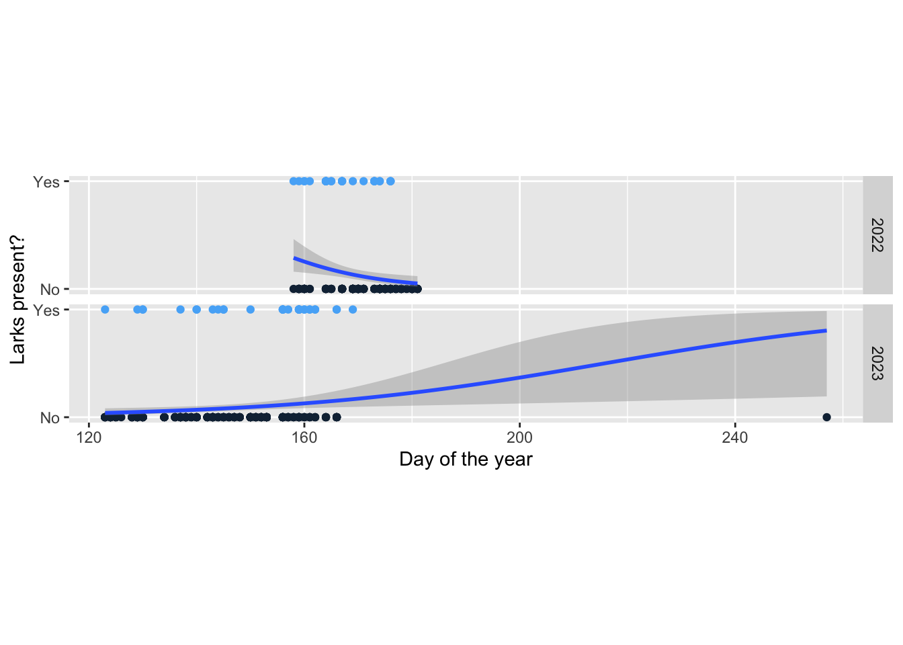
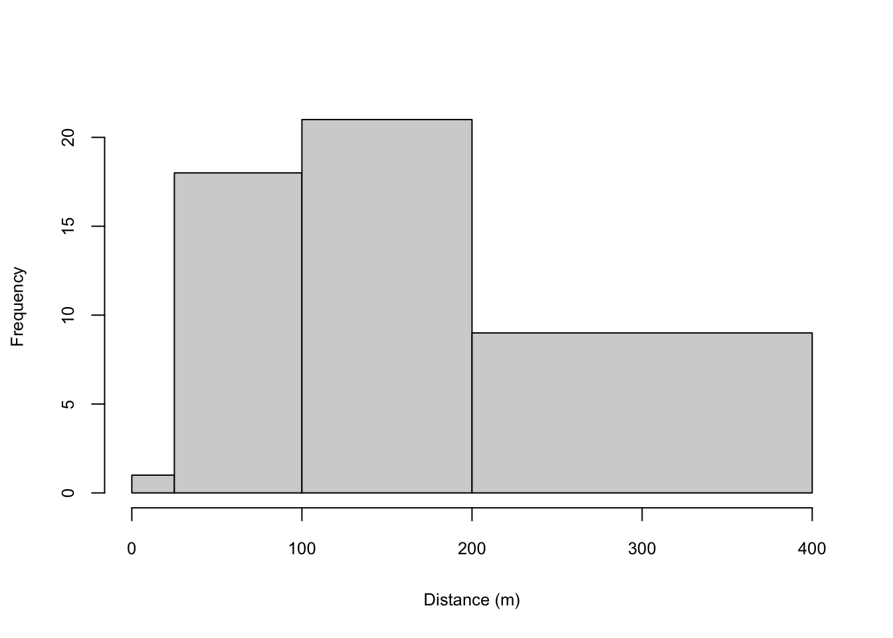

| Year | No. of larks detected | No. of survey points | Frequency |
|---|---|---|---|
| 2022 | 0 | 186 | 0.87 |
| 2022 | 1 | 13 | 0.06 |
| 2022 | 2 | 7 | 0.03 |
| 2022 | 3 | 5 | 0.02 |
| 2022 | 4 | 3 | 0.01 |
| 2023 | 0 | 328 | 0.91 |
| 2023 | 1 | 20 | 0.06 |
| 2023 | 2 | 11 | 0.03 |
Streaked Horned Lark detectability and abundance: preliminary results
Encounter rates
Streaked Horned Larks were detected at 13% (n = 28) of the 214 points surveyed in the Willamette Valley of Oregon in 2022 and 9% (n = 359) in 2023 (Table 1).
However, encounter rates of singing males were slightly lower (Table 2). This is significant because it determines the sample size for the distance-sampling analysis, which is generally conducted only on singing males.
| surveyYear | larksDetected | count | freq |
|---|---|---|---|
| 2022 | 0 | 194 | 0.91 |
| 2022 | 1 | 13 | 0.06 |
| 2022 | 2 | 3 | 0.01 |
| 2022 | 3 | 4 | 0.02 |
| 2023 | 0 | 332 | 0.92 |
| 2023 | 1 | 21 | 0.06 |
| 2023 | 2 | 6 | 0.02 |
Encounter rates did not change over the survey period in 2023
Encounters with larks tended to decline over the course of the season in 2022 (Figure 1). Assuming that an earlier start to the season would yield more encounters, the 2023 season began more than 30 days earlier than the 2022 season (3 May in 2023 versus 7 June in 2022). However, in 2023, detections of larks were not strongly associated with the date on which a survey was conducted (Figure 1).

Estimating perceptibility of singing larks with distance sampling
Distance sampling estimates the extent of the decline in an observer’s ability to detect a bird as a function of the distance between the observer and bird. This parameter, referred to here as perceptibility, estimates the probability of detecting a bird within the survey area given that it was present during the survey and that it made itself available for detection, for example by singing. It does not account for birds present but unavailable for detection, for example because they did not sing and remained out of view.
Because distance sampling is sensitive to individual heterogeneity in the shape of the detection function, I adopted standard practice and limited this analysis to singing males. Non-singing males and females may have a different detection function (Table 3) and so including them in the analysis could introduce substantial bias. This decision reduces the sample size considerably; with a greater number of detections, models that include sex and detection type as covariates could be fit.
| Year | Sex | Detection type | Number |
|---|---|---|---|
| 2022 | Male | Calling | 1 |
| 2022 | Male | Singing | 31 |
| 2022 | Male | Visual | 9 |
| 2022 | Female | Visual | 7 |
| 2022 | Unknown | Calling | 4 |
| 2022 | Unknown | Visual | 2 |
| 2023 | Male | Singing | 18 |
| 2023 | Male | Visual | 1 |
| 2023 | Female | Singing | 1 |
| 2023 | Female | Visual | 1 |
| 2023 | Unknown | Calling | 3 |
| 2023 | Unknown | Singing | 14 |
| 2023 | Unknown | Visual | 1 |
Most of the singing males encountered during surveys were detected in the second and third distance bands (Figure 2). That only a single detection was registered in the first distance band is not unexpected given that the area included in this band is substantially smaller than the area included in the other distance bands.

I considered models in the distance-sampling analysis that included individual effects of four potential covariates on perceptibility: day of the year (“day”), ambient noise (“noise”), temperature at the time of the survey (“temp”), and time of day (quantified as the number of minutes after sunrise (“MAS”) that the survey began). I also considered null models in which no covariates on perceptibility were included. I did not include any covariates on abundance, both because of sample size concerns and because we have yet to generate any covariates that might predict variation in abundance. I did not include models with more than one covariate due to the small sample size. I considered two suites of these individual-covariate models, one that assumed a half-normal (“hn”) detection function and one that assumed a hazard-rate (“ha”) detection function.
The best-supported model in the distance-sampling analysis was the null model with a half-normal detection function (Table 4). Model fit was adequate; chi-square and Freeman-Tukey statistics both suggested no deviation from model expectations (P = 0.31 and 0.42 respectively) but the sum-of-squared errors indicated overdispersion (P = 0.04). This values should be re-estimated after the data have been screened for data-entry errors. None of the covariates had a strong influence on perceptibility. In general, the hazard-rate models performed no better than the half-normal models, but required estimating one additional parameter and so tended to rank beneath half-normal models by about 2 AIC values.
| Model | No. parameters | AICc | Delta AICc | Model likelihood | AICc weight | Log-likelihood | Cum. weight | |
|---|---|---|---|---|---|---|---|---|
| 6 | hnNull | 2 | 465.38 | 0.00 | 1.00 | 0.18 | -230.68 | 0.18 |
| 2 | haDay | 4 | 465.42 | 0.04 | 0.98 | 0.18 | -228.68 | 0.36 |
| 7 | hnDay | 3 | 466.17 | 0.78 | 0.68 | 0.12 | -230.06 | 0.49 |
| 8 | hnNoise | 3 | 466.27 | 0.89 | 0.64 | 0.12 | -230.12 | 0.60 |
| 10 | hnTemp | 3 | 466.39 | 1.01 | 0.60 | 0.11 | -230.18 | 0.72 |
| 1 | haNull | 3 | 466.90 | 1.52 | 0.47 | 0.09 | -230.43 | 0.80 |
| 9 | hnMAS | 3 | 467.15 | 1.77 | 0.41 | 0.08 | -230.55 | 0.88 |
| 3 | haNoise | 4 | 468.16 | 2.78 | 0.25 | 0.05 | -230.05 | 0.92 |
| 5 | haTemp | 4 | 468.31 | 2.93 | 0.23 | 0.04 | -230.12 | 0.96 |
| 4 | haMAS | 4 | 468.69 | 3.30 | 0.19 | 0.04 | -230.31 | 1.00 |
Estimated perceptibility of streaked horned larks was 0.14 (95% CI = 0.11 - 0.19). With the low estimated perceptibility of larks, the resulting abundance estimate from the best distance model was also quite high: 1.3 larks per km2 (95% CI = 0.6 - 1.6).